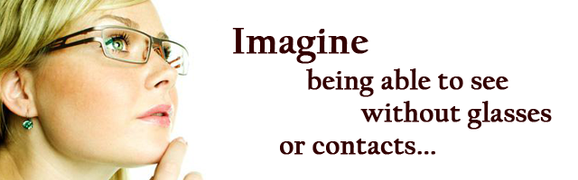

Scheduling
We welcome all new patients!
Please call us during our business hours to schedule your routine or follow-up appointment. We will be happy to accommodate all of your eye care needs. Please be sure to bring your current eye glasses and/or contact lenses, prescription sun glasses and insurance card.
Thank you.
Business Hours
Monday - Friday
9:30 am - 5:30 pm
We can assist you in English, Italian, Spanish, Russian and Mandarin languages.
Preparing For Visit
About Your Visit.
If this is your first time visiting our office, we do suggest that you arrive 10 minutes prior to your scheduled appointment time to fill out the necessary forms. For your convenience we have made all of the forms available on this website, if you would like to download the forms please click here. Please be sure to bring to your appointment the following; current prescription glasses or sunglasses, contact lenses and insurance card. All of the payments, co-payments or any other fees are expected to be paid in full when services are rendered.
If you need to reschedule or cancel your appointment a 24 hour courtesy notification is greatly appreciated by our office and staff.
Referrals.
If you are coming to our office with a medically related issue you may need to obtain a referral from your Primary Care Physician. Not all of the insurance plans cover this type of visit. Please check with your insurance provider to determine if a referral is needed.
Our NPI(national provider identifer) for such a visit is 1679639793.
Forms
Please navigate and download the necessary forms in the links below.
Privacy Notice
Our Office:
Dr. Rosanna Lamalva
phone 617-523-9700
We respect our legal obligation to keep health information that identifies you private. We are obligated by law to give you notice of our privacy practices. This Notice describes how we protect your health information and what rights you have regarding it.
You can download the Privacy Notice in full here.
Insurance
The following insurance plans are accepted by our office for the eye
care and optical needs of our patients:
*Aetna
*Blue Cross Blue Shield (BCBS)
*Cigna
*Davis
*Eyemed/ECPA
*GIC/Unicare
*Harvard Pilgrim Health Care
*Medicare
*Neighborhood Health Plan
*Optum/United Health Vision
*Superior Vision
*Tufts Insurance Plan
*United Health Care
*Vision Service Plan (VSP)
If your insurance is not listed above, please contact us to discuss alternative options. For those patients whose insurance we do not accept, please check with your insurance company, as you may be eligible for reimbursement. We also welcome any self-paying patients.
Types of Payment Accepted: Cash, Personal Checks, MasterCard, Visa, Discover and Debit Cards.
Doctors
Dr. Lamalva
Dr. Rosanna Lamalva completed her undergraduate studies at Boston College.
She earned her Doctor of Optometry from the New England College of Optometry in 1999.
Dr. Lamalva has worked as a Pediatric Optometrist at Lexington Eye Associates prior to opening her own practice.
Dr.Lamalva opened her own office in Boston in 2001.
She is board certified to diagnose, manage and treat various conditions and diseases of the eye. She is also certified in Laser refractive surgery co-management. Dr Lamalva has been successfully collaborating with Dr. Melki at the Boston Eye Group for over 10 years in pre-LASIK and post-LASIK care of her patients.
Dr. Lamalva enjoys working with patients of all ages and specializes in the fitting of disposable contact lenses and hard-to-fit patients such as those with symptoms of "dry eye," hard-to-fit toric (astigmatism) lenses and difficult to fit Rigid Gas Permeable Lenses. Dr Lamalva is a member of Massachusetts Society of Optometrists and American Optometric Association.
Eye Care
Visual perception or eye sight is the individual's ability to assimilate information from the environment by visible light reaching the eye, it is a crucial system to keep healthy. One of the most important things you can do to preserve your eyesight is to visit your optometrist for regular checkups.
Unlike the rest of your body which often alarms you with the sensation of pain in cases of ill health, the eyes and visual systems do not. Many adverse vision conditions do not show any obvious symptoms, and therefore an annual examination should become a vital part of every patient's healthcare.
The Doctors of Optometry at out office are highly skilled and experienced, and the comprehensive eye exam is a great start for preventive eye care.
Comprehensive Eye Exam
Routine eye and vision exams are a crucially important part of a person's preventive health care. The wide variety of tests that we will perform will determine the overall health of the eye. Many eye conditions do not show obvious signs or symptoms, therefore it is important to have periodic checkups. There is no preparation required for any of the tests, they are non invasive and there is no discomfort endured.
1. Color Test – also known as the Ishihara color vision test, a technician will present you with a number of pages within a booklet. The pages will contain a number of multicolored dots with a number or a symbol embedded within the dots, a person with normal color perception will be able to distinguish the symbol within the dots. This test will be able to determine if any color vision problems are present.
2. Depth Perception (stereopsis testing) – this test will evaluate if your eyes are working together appropriately. You will wear polarized viewers which are similar to glasses for this evaluation, and will be shown a series of charts, patients with standard results will be able to distinguish the appropriate images.
3. Visual Test (automated perimetry) – the peripheral vision is the focus of this test, during the exam you will be asked to look into a scope similar to a binocular, you will look into the center as the instrument emits small flashes of light, and whenever light is seen you will press a clicker to record the results. A computer will then calculate and map your field of vision. This will determine if there are any defects in your field of vision, and the pattern of loss will help to diagnose the cause.
4. Glaucoma test (Non-contact tonometry) – glaucoma is usually present with intraocular pressure or pressure inside the eye. In this test a rapid pulse of air will be blown to applanate(flatten) the cornea, and will help determine resistance of the cornea to pressure. A higher risk of glaucoma is often associated with increased intraocular pressure.
5. Auto refraction – the optometrist with the assistance of the auto refractor will be able to automatically determine your eyeglass or contact lens prescription. During the test a chin rest will be used to stabilize your head, while your eyes will focus on an image, the instrument will then determine the lens power required to precisely focus light on your retina and accurately establish your refractive error.
6. Optomap – routine eye exams are often limited to examining the front of your eye, the optomap Retinal Exam is able to get an ultra-widefield view of the retina (the back of the eye), and this comprehensive screening of the retina is able to verify that your eye is healthy. The technologically innovative instrument is able to achieve this with a series of photographs which only take a fraction. This test is recommended to most patients and particularly those who wish not to be dilated. Go to www.optos.com to learn more about Optomap.
Eye Conditions
Listed below are some of the more common eye conditions, the list does not contain all of the eye conditions and diseases that exist. Contact your optometrist or primary care physician to have an examination or for further information.
1. Dry Eye – often occurs due to the lack of moisture in the eyes, as the eye is dependent on the flow of tears to provide constant lubrication to sustain vision and comfort. Common symptoms are stinging, burning, eye fatigue after short periods of reading, sensitivity to light and blurred vision.
2. Floaters & Flashes – appear as little specks in the shape of small, dark, shadowy shapes or squiggly lines in your field of vision. They become more prominent when looking at something bright like white paper or a blue sky. Most floaters are a normal part of the aging process and are not harmful, but in some cases they could be signaling a more serious condition like retinal detachment. It is important to have an eye care professional to examine your eyes.
3. Cataract – is the clouding of the lens in your eye. In most cases this is an age related condition, and replace with progresses with time. However, cataracts can also develop with physical trauma and eye injury. The symptoms are cloudy or blurry vision, poor night vision, double vision or multiple images in one eye.
4. Glaucoma – actually refers to a group of conditions; open-angle(chronic) glaucoma, Angle-closure (acute) glaucoma, Congenital glaucoma, Secondary glaucoma. These conditions lead to damage to the optic nerve, the nerve that is responsible for carrying visual information from the eye to the brain. Often, damage to the optic nerve is due to the increased pressure in the eye, known as intraocular pressure (IOP). Most people with open-angle glaucoma have no symptoms and if left untreated could progress to complete blindness. It is important to have tests conducted routinely, especially if you are over the age of 40.
Eye Conditions
5. Conjunctivitis – also known as pink eye is swelling (inflammation) or infection of the transparent membrane that lines your eyelid and part of your eyeball. Conjunctivitis is mostly caused by either a bacterial or viral infection, but could also be caused by allergies or a foreign object in the eye. Symptoms include redness in one or both eyes, itching, a discharge that forms a crust during the night. Pink eye is highly contagious for a duration of up to two weeks after symptoms begin, if you notice any symptoms that you suspect being conjunctivitis make an appointment to see your doctor, with an early diagnosis you protect people around you from contracting pink eye and help you cope with the symptoms and limit your risk of complications.
6. Ocular allergies – the eyes reaction to coming in contact with allergens. The allergic reaction can affect only one or both eyes. The symptoms include burning, itching, watery discharge that is thick and is accompanied by nasal discharge. In very serious cases damage to the eye can occur.
7. Detached retina – is the separation of the light sensitive membrane in the retina (back of eye) from its supporting layers. The detachment occurs with a tear or hole in the retina through which fluids may leak which causes separation of the retina from the underlying tissues. But the separation can also occur by trauma, diabetes or inflammatory disorder. Symptoms include blurred vision, floaters in the eye, shadow or blindness in a fraction of the visual field of one eye, bright flashes of light.
8. Macular degeneration – is a chronic eye disease that causes the loss of vision in the center of your field of vision. It also is the leading cause of drastic vision loss in people over the age of 60. Symptoms include the appearance of straight lines being distorted, center of vision distorted, diminished or changed color perception, blurry areas or white out appear in the center of vision. Age-related macular degeneration can be diagnosed by a routine eye examination.
Contact Lenses And Fitting
We are committed to provide you with the contact lenses that best suit
your needs of comfort and vision. If you are regularly wearing contact
lenses you must have your eyes examined annually in order to refit and
refill your contact lens prescription. If you are new to wearing
contact lenses, we will assist you with a comprehensive eye exam and
contact lens fitting and evaluation to determine what type of contacts
suits your needs and lifestyle. Following the fitting, a technician
will be available to provide the necessary training so that you will
be completely comfortable with the contact lenses. We will schedule a
follow up appointment shortly after to ensure that the vision and
health of your eyes are optimal.
We fit a wide variety of contact lenses, including:
*Single vision soft lenses, for correcting nearsightness or farsightness.
*Toric lenses, for astigmatism.
*Multifocal lenses, for seeing both near and far.
*Cosmetic contact lenses, to change the appearance of eye color.
*Specialty contact lenses, for certain eye disorders.
Click here to download instructions on the care and handling of soft contact lenses.
If you are interested in wearing contact lenses or need to be refitted annualy, please call our office at 617-523-3639 to schedule an appointment. If you have not had an eye examination in past 3 months, you will be required to have a new exam.
Optical/h3>
Our office is a full service provider for the optical needs of VSP and Davis Vision members.

Optical Boutique
| back to home | |||||||
|
|||||||
Eye Bar Boston is introducing our brand-new optical boutique bringing you exclusive and sophisticated eyewear. | |||||||
Designer EyewareOur optical boutique carries the finest and one of the most extensive selection of major designer brands in Boston | |||||||
| |||||||
Optical ShopAt our downtown location we offer wide wide range of optical services, from complimentary adjustments, cleaning, and minor repairs, to a full selection of prescription eyewear and optical accessories.Our skilled opticians will assist you in selecting the frames and lenses that will best suit your lifestyle, including customizing your prescription lenses with options that fit your specific needs. | |||||||
| back to home | |||||||
Contacts
Contact lenses are constantly being improved for more comfort and better vision. And we offer the latest contact lenses available on the market.
Our office carries the following brands:
*Acuvue (1 Day Acuvue, 1 Day Acuvue Moist, 1 day True Eye Acuvue, Acuvue 2, Acuvue 2 Colors, Acuvue Advance, Acuvue Advance Plus, Acuvue Advance for Astigmatism, Acuvue Oasys with Hydroclear plus, Acuvue Oasys for Astigmatism, Acuvue Oasys for Presbyopia)
*Ciba Vision (Air Optix Aqua, Air Optix for Astigmatism, Air Optix Multifocal, Air Optix Night&Day, Focus Dailies, Focus Dailies Toric, Freshlook)
*Cooper Vision ( Avaira, Biofinity, Biomedics, Frequency, Hydrosoft, Preference, Proclear)
*Bausch &Lomb (PureVision, PureVision Toric, PureVision MF, Softens Dailies, Softhens 66 Toric, Softhens 38, Softhens 38 MF)
LASIK
Lasik (Laser-Assisted In Situ Keratomileusis) is an outpatient surgical procedure which is successful in reducing a person's dependency on wearing corrective glasses or contact lenses. The Lasik procedure is becoming one of the most frequent elective procedures in North America, and is effective at correcting myopia, hyperopia and astigmatism.
It is important to discuss the Lasik procedure with one of our Doctors of Optometry to determine if the procedure is right for you. We are affiliated with the most experienced surgeons at the Boston Eye Group performing the corrective surgery.
Please contact our office for further information.

Directions
Our office is conveniently situated in downtown Boston directly off of School St and within a very short walking distance from Borders, Omni Parker Hotel and Old City Hall.
We are accessible by car or public transit.
*Please take note that City Hall Ave is not accessible by motor vehicles.
By Car:
Driving directions through MapQuest
If you are driving in by car we do recommend parking at the Parcel 7 Garage near Haymarket (136 Blackstone St, Boston, MA 02109), it is one of the more affordable garages in the area.
By T:
We are easily accessible by the MBTA Red, Orange and Green lines of the Subway, exit at either Park Street or Government Center Stations.
Address: 10 City Hall Ave, Boston, Ma 02108 phone: 617-523-9700.
Contact Us
Our office will promptly respond to your inquiry within 24 to 48 hours. Thank You. Ph: 617-523-9700 Mon - Fri: 9:30 am - 5:30 pm |
Our Eye Doctors perform a variety of tests to determine the state of your ocular health. We test for and treat many eye conditions such as Glaucoma, Cataracts, allergies, Dry Eye, Pink Eye and more. Many visual or eye health problems can be corrected and we will help you determine which options are right for you.